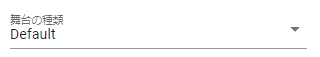
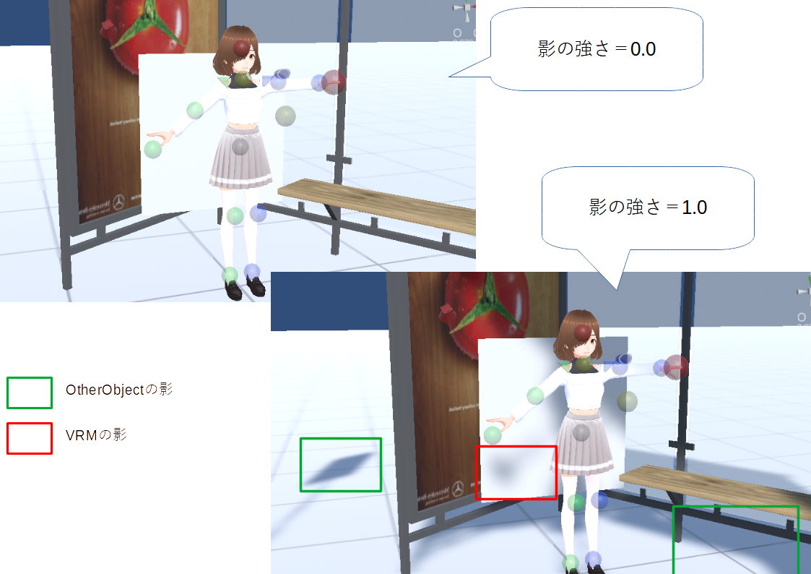

10.14. Stage
Stage handles the environment such as the floor, sky, and lighting.
10.14.1. Stage
Select the stage from the combo box.
Example of changing the floor to “SeaNight” and the color of the sky

Hint
Please use OtherObjects to represent buildings and trees.
To create buildings, gardens, etc., we recommend an application called “SweetHome 3D”. Please search for details on how to use this software.
The point of using this software is that you can export 3D models in Obj format.
When reading a 3D model (obj format) made by SweetHome3D with this application, compress the generated files below into a single zip file and use it.
obj file
mtl file
Other jpg / png files
10.14.1.1. water stage
BasicSeaLevel, DaytimeWaterStage, and NighttimeWaterStage are stages that are on the surface of the sea or water. Each has a slightly different effect.
DaytimeWaterStage and NighttimeWaterStage are different shaders and shapes from BasicSeaLevel and water surface objects.
Hint
By using the
water surfacein the basic shape of OtherObject, you can create a partial water surface while using the ground stage.
10.14.1.2. UserStage
UserStage is a type of stage where you can express yourself by pasting your favorite textures.
Select
UserStagefrom the combo box.The properties are displayed, so set them as you like.
- Main texture:
Separately load the texture file in advance and select the material name.
- normal map texture:
Load the normal map file in advance as a separate texture file and select the material name.
- Color:
texture base color
- blend mode:
Shader Mode
- metallic:
Metallic in shader
- Glossiness:
Glossiness in shader
- Emitting color:
Emission Color in shader
Caution
Unlike VRMs and OtherObjects, shaders themselves cannot be switched.
10.14.2. Lighting (directional light)
Lighting (Directional light) is represented by a figure like a red electric light on WebGL. You can specify the angle of light irradiation by rotating this with the operation handle. (Movement is not reflected. It is an effect only to make the operation handle easier to handle.)

Also used as sun position if sky is normal sky and sky daytime.
Note
Stage lights cannot be deleted like Light objects.
Object Shadows
The darkness of shadows in this application can be set in the Stage properties. This setting is common to all objects.
Also, depending on how the Light object is used, the strength and density of shadows that appear when hitting other objects will change.
10.14.2.1. Halo
lighting, which is a system light.Specifically, you can finely control the halo by following these steps:
Specify the base value of the halo in the Stage’s
Lighting.Specify the color, strength and range of each light object.
Each light object’s halo effect changes.
As you can see, haze will be displayed around the light. You cannot clearly switch the halo ON/OFF of individual Light objects, but you can adjust it by specifying the halo’s basic value and the range on the Light object side.
10.14.3. Wind
By blowing the wind, you can make the bones included in the VRM naturally sway. The wind is calculated by multiplying the strength of the wind by the fluctuation of the wind.
The fluctuation of the wind is actually random within the following range.
Then, you can make it blow at random intervals within the range of the minimum and maximum values specified in “Wind Blowing Timing”. By specifying this appropriately, you can produce a natural wind.
Warning
The wind settings directly manipulate the gravity settings of the bones in the VRM. Do not use wind when setting gravity on the VRM side. Operations conflict.
Warning
Due to the specification change of SpringBone in VRM1.x, the behavior of this function has changed slightly. Please note that we will continue to make adjustments in the future.
10.14.4. Sky
The sky has two modes: normal sky and monochromatic. The default is solid color. When set to “Single color”, only the color of the sky can be set, but when set to “Normal sky”, detailed settings can be made.

For sky daytime (daytime sky) |
For sky night blue/sky night purple (night sky) |
|
|


Note
Please refer to Unity’s official reference for each setting.
For sky daytime, the sun is present. The position of the sun changes with the angle of rotation of the illumination.
Warning
When anti-aliasing is enabled, two lines in sky night may be mixed when captured. This is the WebGL specification. please note that.